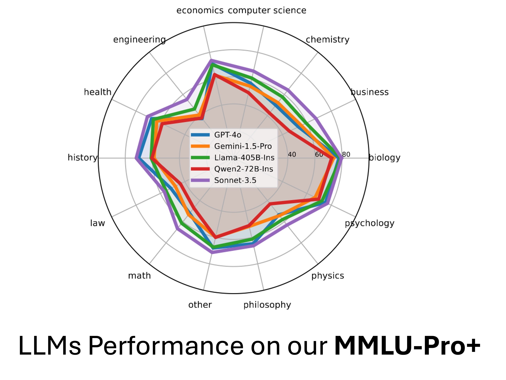
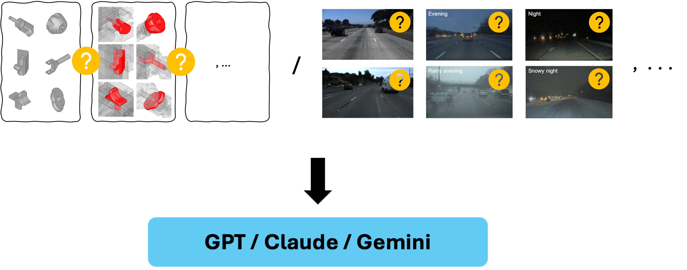
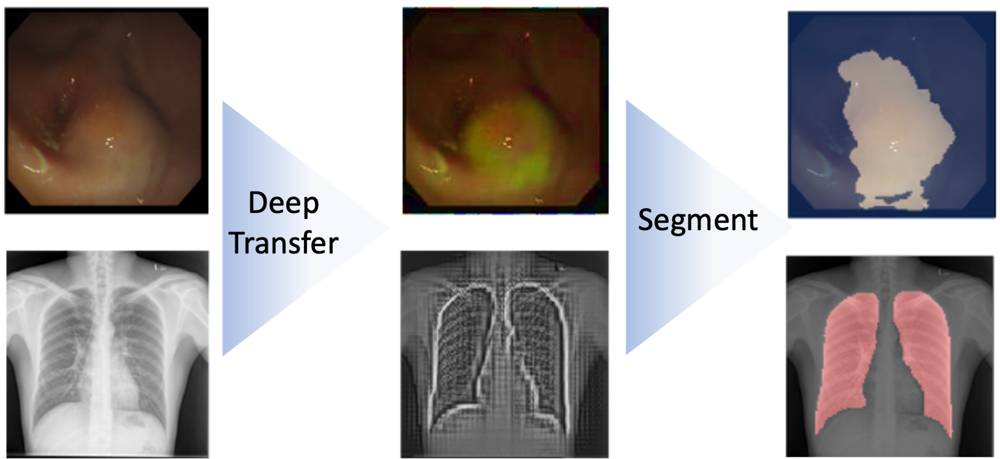
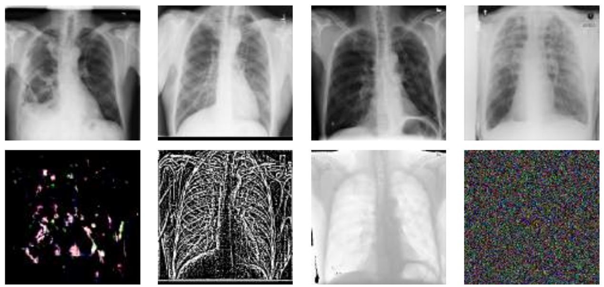

|
I am a Principal Machine Learning Research Scientist at Autodesk AI Research and an Adjunct Research Professor at the School of Computing Science (ranked #1 in Computer Vision in Canada), Simon Fraser University (SFU), Canada. Previously, I explored real-world machine learning and computer vision problems in startup environments. I completed my PhD in Computing Science at SFU under the supervision of Prof. Ghassan Hamarneh. During my PhD I had multiple research visits/internships at different research institutions such as MILA (Montreal, Canada), Siemens Healtheneers (Princeton, USA), and Imagia (Montreal, Canada). Outside of work, I have a strong passion for soccer and running track - the 100m sprint. I've had the privilege of competing and earning a few medals in inter-university competitions in these areas. Email / LinkedIn / Google Scholar / X |

|
|
I lead research and development initiatives focused on interpretable and safe machine learning systems that are robust, reliable, and fair. Recently been focusing more on generative models incluing LLMs and VLMs. Benchmarking and Understanding of Reliability of ML Models: Designing experiments and building datasets for robustness analysis, including domain generalization and memorization in generative models. Data Bias Analysis: Building tools for analysis of known and hidden data biases. Interpretability and Explainability: Building tools for understanding ML models' behavior and developing safe ML models. Mitigations of Biases: Modifying datasets and designing new models to better handle biases, out-of-domain samples, and improve generalization. |
|
|
|  |
MMLU-Pro+: Evaluating Higher-Order Reasoning and Shortcut Learning in LLMs
Saeid Asgari Aliasgahr Khani, and Amir Khasahmadi Preprint 2024, |
|  |
How to Determine the Preferred Image Distribution of a Black-Box Vision-Language Model?
Saeid Asgari and Joseph Lambourne Preprint 2024, |
|
The Problem of Generative Parroting: Navigating Toward Responsible AI [part 1 , part 2 , part 3]
Saeid Asgari , Autodesk Research Blog, 2024 |
|
Detecting Generative Parroting through Overfitting Masked Autoencoders
Saeid Asgari and Joseph Lambourne CVPR 2024, Responsible Generative AI workshop |
|
Learned Visual Features to Textual Explanations
Saeid Asgari et al., ICLR 2024, Reliable and Responsible Foundation Models workshop |

|
SLiMe: Segment Like Me
Optimzing textual embedings for single-shot object/part segmenation. Aliasghar Khani, Saeid Asgari, Aditya Sanghi, Ali Mahdavi-Amiri, Ghassan Hamarneh ICLR 2024 |
|
|

|
MaskTune: Mitigating Spurious Correlations by Forcing to Explore
Saeid Asgari*, Aliasghar Khani*, Fereshte Khani*, Ali Gholami*, Linh Tran, Ali Mahdavi-Amiri, Ghassan Hamarneh, NeurIPS 2022 [paper] |
|
Robust Representation Learning via Perceptual Similarity Metrics
Saeid Asgari*, Kristy Choi*, Amir Khasahmadi, Anirudh Goyal, ICML 2021 (Spotlight presentation) [paper] |

|
RobustPointSet: A Dataset for Benchmarking Robustness of Point Cloud Classifiers
Saeid Asgari*, Jieliang Luo*, Ran Zhang, Ye Wang, Pradeep Kumar Jayaraman, Krishna Murthy Jatavallabhula, ICLR 2021, RobustML workshop [paper] |

|
PointMask: Towards Interpretable and Bias-Resilient Point Cloud Processing
Saeid Asgari , Kaveh Hassani, Pradeep Kumar Jayaraman, Amir Khasahmadi, Tonya Custis, ICML 2020, Human Interpretability in Machine Learning workshop (Oral presentation) [paper] |
|
A Kernelized Manifold Mapping to Diminish the Effect of Adversarial Perturbations
Saeid Asgari , Kumar Abhishek, Shekoofeh Azizi, Ghassan Hamarneh, CVPR 2019 [paper] |
|
InfoMask: Masked Variational Latent Representation to Localize Chest Disease
Saeid Asgari , Mohammad Havaei, Tess Berthier, Francis Dutil, Lisa D. Jorio, Ghassan Hamarneh, Yoshua Bengio, MICCAI 2019 (Early accept) [paper] |
|  |
Improved Inference via Deep Input Transfer
Saeid Asgari , Kumar Abhishek, Ghassan Hamarneh, MICCAI 2019 (Early accept) [paper] |
|
Select, Attend, and Transfer: Light, Learnable Skip Connections
Saeid Asgari , Aicha Bentaieb, Anmol Sharma, S. Kevin Zhou, Yefeng Zheng, Bogdan Georgescu, Puneet Sharma, Sasa Grbic, Zhoubing Xu, Dorin Comaniciu, Ghassan Hamarneh, MICCAI 2019, MLMI workshop (Oral presentation) [paper] |
|  |
Vulnerability Analysis of Chest X-Ray Image Classification Against Adversarial Attacks
Saeid Asgari , Arkadeep Das, Ghassan Hamarneh, MICCAI 2018, Understanding and Interpreting Machine Learning in Medical Image Computing applications workshop (Oral presentation) [paper] |
|
|
|
Deep Semantic Segmentation of Natural and Medical Images: A Review
Saeid Asgari*, Kumar Abhishek*, Joseph Paul Cohen, Julien Cohen-Adad, Ghassan Hamarneh, Artificial Intelligence Review, 2020 (IF=12) [paper] |

|
Combo Loss: Handling Input and Output Imbalance in Multi-Organ Segmentation
Saeid Asgari , Yefeng Zheng, S. Kevin Zhou, Bogdan Georgescu, Puneet Sharma, Daguang Xu, Dorin Comaniciu, Ghassan Hamarneh, Computerized Medical Imaging and Graphics, 2019 (IF= 7.42) [paper] |

|
Segmentation-Free Direct Tumor Volume and Metabolic Activity Estimation from PET Scans
Saeid Asgari , Nouirin Duggan, Hilgan Ma, Anna Celler, Francois Benard, Ghassan Hamarneh, Computerized Medical Imaging and Graphics, 2018 (IF=7.42) [paper] |
|
Pareto-Optimal Multi-Objective Dimensionality Reduction Deep Auto-Encoder for Mammography Classification
Saeid Asgari , Jeremy Kawahara, Ghassan Hamarneh, Computer Methods and Programs in Biomedicine, 2017 (IF=7.10) [paper] |
|
|

|
Counterbalancing Teacher: Regularizing Batch Normalized Models for Robustness
Saeid Asgari , Ali Gholami, Fereshte Khani, Kristy Choi, Linh Tran, Ran Zhang, Aliasghar Khani, arXiv, 2022 [paper] |
|
Jigsaw-VAE: Towards Balancing Features in Variational Autoencoders
Saeid Asgari , Mohammad Havaei, Alex Lamb, Aditya Sanghi, Ara Danielyan, Tonya Custis, arXiv, 2020 [paper] |
|
Signed Input Regularization
Saeid Asgari , Kumar Abhishek, Ghassan Hamarneh, arXiv, 2019 [paper] |
|
Design template by Jon Barron |